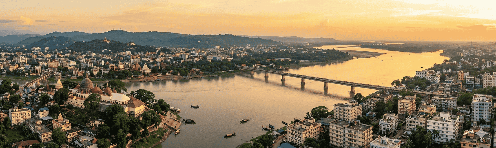

Guwahati is the largest city in the Indian state of Assam, located in the north-eastern part of India along the southern bank of the Brahmaputra River. The city lies at an average elevation of approximately 55 meters (180 feet) above sea level and serves as the primary gateway to Northeast India.
Area: Approximately 216 Square Kilometres
Guwahati represents a dynamic blend of ancient heritage and rapid urban development. Often referred to as the “Gateway to Northeast India,” the city is known for its spiritual landmarks such as the Kamakhya Temple, historic sites, vibrant tea trade, and growing commercial and educational hubs. It plays a vital cultural, economic, and logistical role in the northeastern region.
Summer: April–June (Up to 38°C)
Rainy Season: May–September (Heavy Rainfall)
Winter: November–February (As low as 10°C)
Best Time: October to March
Time Zone: IST (UTC +5:30)
Population: ~1.1 Million
Languages: Assamese, Hindi, English, Bengali
Literacy: 91%
Republic Day: 26th Jan
Independence Day: 15th Aug
Gandhi Jayanti: 2nd Oct
Major Festivals: Rongali Bihu, Bhogali Bihu, Kongali Bihu, Durga Puja, Diwali, Eid, Christmas, Janmashtami, Ambubachi Mela, Magh Bihu, Holi, Vishwakarma Puja
Police: 100
Fire: 101
Ambulance: 108
General Info: +91 88888 88888

Guwahati’s rental market has shown steady growth in recent years, driven by expanding infrastructure, improved road connectivity, and increasing commercial activity. Although the market experienced a slowdown during the nationwide disruption in 2020, demand has since recovered with new residential developments and urban expansion. Properties in expatriate-preferred neighbourhoods generally command higher rental values.
When choosing a residential area, factors such as traffic congestion, commuting time, proximity to offices, schools, markets, and access to public transport should be carefully considered. While Guwahati has city buses, auto rickshaws, and app-based taxi services, expatriates often prefer chauffeur-driven cars for greater comfort, safety, and reliability.
Preferred expatriate and premium residential areas include:
Central & Established Areas: GS Road, Zoo Road, Beltola
Prime Residential Corridors: Six Mile, VIP Road,
Panjabari, Khanapara
Emerging & Outskirts: Dharapur, Jalukbari, Amingaon
Newer developments toward the outskirts of Guwahati are gaining popularity due to corporate expansion, better housing layouts, and comparatively lower congestion while still offering access to key city areas.
Guwahati offers several quality hotels suitable for short-term stays. Availability may be limited during major festivals or events, such as Ambubachi Mela, and advance reservations are strongly recommended.
Popular options include Vivanta Guwahati, Novotel, Radisson Blu, Greenwood Resort, and Hotel Dynasty.
Long-term accommodation options include apartments, duplexes, villas, and independent houses, available in both gated communities and standalone formats. Many modern residential complexes provide 24-hour security, power backup, gyms, and community halls, making them popular among expatriates.
Independent houses offer greater privacy and outdoor space but may require separate arrangements for security. Newly developed villa projects in areas such as Panjabari and Khanapara combine the privacy of independent living with gated community amenities.
Breakdown of available properties:
Availability: Moderate across preferred residential
areas.
Types: Detached (~35%), Semi-detached (~65%).
Style: 3–4 bedroom bungalows with attached bathrooms,
kitchen, living and dining areas, and small gardens.
Average Age: 8–12 years.
New Construction (<5 years): ~18%.
Availability: Good in both central and suburban
neighbourhoods.
Building Type: Small buildings (~50%), Large complexes
(~50%).
Style: 1 master bedroom with 2–3 additional bedrooms,
attached bathrooms, kitchen, living and dining areas.
Average Age: 5–10 years.
New Construction (<5 years): ~25%.
Guwahati offers housing options across a wide budget range, from economical to premium. Upscale localities often include landscaped green spaces, children’s play areas, and improved infrastructure. Visiting shortlisted properties at different times of day is recommended to assess traffic, noise levels, water supply, and overall neighbourhood conditions.
Serviced apartments in Guwahati generally fall into the following categories:
A. Professionally Managed Serviced Apartments
• Typically located near GS Road and central business districts, offering
housekeeping and concierge services.
B. Standalone Serviced Apartments
• Located within residential neighbourhoods such as Beltola and Zoo
Road; quality and services may vary.
C. Guest Houses
• Widely available but may lack the privacy and facilities preferred by
expatriates.
Always confirm the availability of internet connectivity, laundry services, power backup, and security arrangements before finalising any serviced accommodation.
In Guwahati, it is standard practice to provide a refundable, interest-free security deposit equivalent to 1 to 3 months’ rent, depending on the property type and landlord requirements.
Confirm whether the rent includes maintenance charges. Utility connection setup is usually handled by the landlord, while monthly usage charges such as electricity, water, and internet are paid directly by the tenant.
Furniture leasing services are available through local dealers and online platforms, offering basic to premium packages. Most leased furniture is pre-owned and available with flexible rental terms. Availability may vary depending on the neighbourhood. For assistance, Kraft Mobility is a commonly used service provider.

Guwahati has a growing and dependable financial and banking ecosystem, supported by public-sector banks, private-sector banks, and authorised foreign exchange service providers. The city offers essential banking, currency exchange, and digital payment services suitable for residents, expatriates, and business travellers.
The official unit of currency in India is the Indian Rupee (INR).
Credit cards are widely accepted in Guwahati, particularly in shopping malls, branded retail outlets, fine dining restaurants, hotels, and large commercial establishments.
Most Indian banks issue credit cards with revolving credit limits and cash advance facilities.
RuPay, VISA, and MasterCard are the most commonly accepted card networks. American Express acceptance is limited and generally restricted to select premium hotels and high-end establishments.
Note: International credit card transactions may attract foreign currency conversion or processing fees. Please confirm applicable charges with your issuing bank.
Guwahati has a well-distributed ATM network across commercial hubs, residential neighbourhoods, and areas near tourist attractions.
Traveller’s cheques can be purchased or encashed at leading public and private banks, as well as authorised money changers in Guwahati.
Commonly available currencies include US Dollar and British Pound Sterling. Other major currencies may be available through select banks upon request.
A valid passport is required when purchasing or encashing traveller’s cheques.
Guwahati hosts a mix of government-owned public-sector banks, private Indian banks, and a limited presence of international banks.
Typical Banking Hours:
Most banks operate between 10:00 – 16:00 on weekdays, though some
branches may open earlier or close later depending on location.
Under Indian Foreign Exchange and Income Tax regulations, foreign nationals employed in India are generally permitted to open one bank account per city.
Relocation consultants or corporate HR teams may assist with opening the following account types:
Documentation requirements may vary by bank but generally include:
The account opening process typically takes 2 to 10 working days, subject to verification. ATM/debit cards are issued upon request.
Most major banks in Guwahati provide secure internet and mobile banking services, including:
Internet banking is widely adopted and supported by steadily improving digital infrastructure across the city.

Common health risks in Guwahati include cholera, dengue fever, dysentery, hepatitis, malaria, meningitis, and typhoid. Mosquito-borne illnesses are more common during and after the monsoon season.
Guwahati’s air quality is generally better than that of larger Indian metropolitan cities; however, pollution levels may increase during winter months and peak traffic hours, which can affect individuals with respiratory conditions.
It is strongly recommended to ensure that all routine vaccinations are up to date prior to arrival, particularly for long-term residents and families.
In a medical emergency, it is important to be aware of the nearest hospital. Traffic congestion in Guwahati can delay ambulance response times, particularly during peak hours.
Using a private vehicle or app-based taxi services such as Uber or Ola is often faster than waiting for an ambulance. Always carry personal identification, including your passport or Residential Permit (RPRC), when travelling.
Guwahati has a well-developed private healthcare network with modern medical infrastructure and experienced, English-speaking doctors in most premium hospitals.
Medical treatment costs are generally lower than in Western countries, while still providing access to quality care and advanced diagnostic services.
Most medications are readily available at pharmacies throughout Guwahati, often without a prescription. Certain antibiotics and regulated medicines may require a valid prescription.
If you are already taking prescribed medication, inform your doctor to avoid potential drug interactions.
Emergency Ambulance Service (Assam): 108
Police Emergency Number: 100

Education in Guwahati is available from Kindergarten through Higher Education. Early education primarily follows the kindergarten model, while primary and secondary education is offered through a wide range of state, national, and international education boards.
Schools in Guwahati are affiliated with various boards including Assam State Board, Central Board of Secondary Education (CBSE), Council for the Indian School Certificate Examinations (CISCE), National Institute of Open Schooling (NIOS), Cambridge Assessment International Education (IGCSE), and the International Baccalaureate (IB) .
After completing secondary education, students progress to Higher Secondary (Grades 11 and 12) or Pre-University Courses (PUC). Successful completion enables entry into colleges, universities, and professional institutions. Guwahati hosts numerous colleges, universities, and institutions offering undergraduate, postgraduate, research, and professional certification programs.
With Guwahati’s growth as the educational and commercial hub of Northeast India, the number of international and globally affiliated schools serving expatriate and NRI families has increased steadily. These schools welcome students of all nationalities and reflect cultural diversity in their curriculum and teaching approach.
Educating children in Guwahati offers exposure to a blend of Assamese, Indian, and global cultures, making it a rewarding experience for expatriate families.
Parents are advised to initiate preliminary admission discussions before accepting a transfer to Guwahati to ensure seat availability.
Guwahati’s growing role as a cultural and trade gateway to Northeast India has increased demand for foreign and Indian language learning. The city offers several private institutes providing instruction in global and regional languages.
Electricity in Guwahati is supplied by Assam Power Distribution Company Limited (APDCL). Electricity charges are calculated on a slab basis, with higher consumption attracting higher per-unit rates.
Water supply in Guwahati is managed by the Guwahati Jal Board or local municipal authorities. Independent houses typically receive monthly water bills.
Door-to-door garbage collection is available in most parts of Guwahati and is managed by the Guwahati Municipal Corporation (GMC). Residential societies and gated communities follow scheduled collection routines.
Bottled LPG is supplied by government-authorised providers including:
New connections require a refundable security deposit, proof of address, and identification. Most households maintain two cylinders to ensure uninterrupted supply.
Guwahati’s humid subtropical climate makes periodic pest control essential to manage mosquitoes, cockroaches, ants, and flies. Professional pest control services are widely available across the city.
Recommendation: Conduct pest control before the monsoon season and ensure WHO-approved chemicals are used, especially in homes with children or pets.

Once you move into your residence in Guwahati, local cable network personnel typically visit the property to set up your cable television connection. A nominal one-time installation fee is usually charged.
Installation generally takes around 2 days. After installation, a monthly subscription fee is paid—often in cash—to the cable operator, who provides a receipt for each payment.
Cable television services provide access to a wide range of national and international channels including STAR, ESPN, HBO, National Geographic, Discovery , along with Hindi, Assamese, and other regional channels.
For a complete and updated channel list, it is advisable to confirm details directly with your local cable operator.
Direct-To-Home (DTH) satellite television services are widely available across Guwahati. Popular service providers include:
DTH services involve a one-time setup cost covering the dish antenna, receiver, and an initial subscription package. Installation typically takes 2–5 working days, depending on technician availability.
DTH providers offer standard-definition and HD channels across multiple languages. Subscription packages can be customised based on viewing preferences, and authorised dealers are commonly available through local electronics outlets and neighbourhood markets.
There has been growing concern in Guwahati regarding unsafe and haphazard overhead cable and wiring installations. Poorly insulated or tangled wires from cable and internet service providers on power poles may pose safety risks, particularly during adverse weather conditions.
It is recommended to confirm that your service provider follows standard installation practices and ensures all wiring is properly secured and insulated.
Guwahati has several FM and AM radio stations broadcasting free of charge. Listeners can tune in using standard radio receivers or car audio systems.
Programming includes regional news, music, talk shows, and cultural content in Assamese, Hindi, and English. A prominent example is All India Radio (Akashvani), which broadcasts regional news and cultural programmes on AM frequencies.
Guwahati offers a wide selection of daily newspapers in Assamese and English.
Popular Assamese dailies include:
Popular English dailies include:
Newspapers can be subscribed to through local distributors, purchased from neighbourhood stalls, or accessed via online editions and e-papers.
Post offices are conveniently located throughout Guwahati, often close to residential areas, and provide a comprehensive range of postal and financial services through India Post.
For premium postal services such as Speed Post, Business Post, Express Parcel Post, and Registered Post, residents can visit nearby main or branch post offices.
Postal services available include:
For accurate information regarding service availability, delivery timelines, and applicable charges, it is recommended to visit your nearest post office or consult official India Post resources.

Telephone and internet services in Guwahati are available through both government-owned and private telecommunications providers, with coverage extending across most residential, commercial, and business areas of the city.
Landline telephone services are provided by BSNL (government-owned) and private operators such as Airtel, Vodafone Idea (Vi), and Jio.
Installation timelines vary by provider. BSNL landline installations generally take 7–14 days, while private providers usually complete setup within 2–5 working days.
Documents Required:
A refundable security deposit and installation charges are payable at the time of application. With private service providers, usage exceeding the deposited amount or delayed bill payments before the billing cycle ends may result in temporary disconnection.
Monthly bills are issued with clearly mentioned due dates and can be paid at service provider offices, authorised payment centres, or via online payment portals.
In some cases, landlords may provide a pre-installed landline connection, in which case tenants are responsible only for monthly rental and usage charges.
International calling can be activated on request at the time of subscription. Applicable tariffs should be confirmed with the service provider.
All major telecom operators in Guwahati support international calling. Users should request activation of this service during sign-up or through customer care.
The international dialling prefix used in India is 00, followed by the relevant country code.
Public phone booths displaying PCO / STD / ISD signage are now extremely rare in Guwahati due to the widespread use of mobile phones. Residents are advised to rely on mobile or landline services for communication needs.
Guwahati has reliable mobile network coverage with major GSM service providers including Jio, Airtel, Vodafone Idea (Vi), and BSNL.
Operators offer a wide range of prepaid and postpaid plans to suit individual and corporate usage requirements.
Postpaid connections require an activation fee and a refundable security deposit. An additional deposit may be required for international roaming.
Prepaid SIM cards are widely available from authorised mobile retailers and local vendors across the city.
As per government regulations, activation of any new mobile connection requires submission of a valid photo ID and proof of address.
Mobile network quality and data speeds may vary by locality. Residents often use speed test tools to determine which operator performs best in their specific area.
Broadband and high-speed internet services in Guwahati are offered by multiple operators, including:
Internet connections are primarily delivered through fiber-optic networks, providing stable and high-speed connectivity suitable for streaming, online gaming, video conferencing, and remote working.
Airtel plans typically start at around ₹499 per month for 40 Mbps unlimited data, scaling up to 1 Gbps. JioFiber plans generally start at approximately ₹399 per month for 30 Mbps unlimited data and voice, with higher-tier plans including OTT subscriptions.
Performance and reliability can vary by neighbourhood. While Jio often offers competitive pricing, some users report more consistent maintenance with Airtel. Certain local ISPs are preferred by gamers and heavy users for lower latency and stable performance.
It is advisable to confirm area-specific availability and service quality before finalising an internet connection.

Guwahati offers a mix of public and private transportation options for residents, professionals, and expatriates. The city is served by app-based cabs, auto rickshaws, city buses, ferry services, and airport shuttle connectivity.
For expatriates and first-time residents, the use of app-based cabs or chauffeur-driven vehicles is generally preferred due to convenience, transparent pricing, and ease of navigation.
App-based ride-hailing services operate across most parts of Guwahati and nearby areas and are widely used for daily commuting and airport travel.
These services are considered reliable and offer fare transparency through mobile applications. GPS-based navigation via Google Maps is commonly used by drivers.
Auto rickshaws are a common mode of transport in Guwahati and are particularly suitable for short-distance travel.
While some auto rickshaws operate using meters, many prefer fixed fares. It is advisable to agree on the fare before starting the journey. Shared auto services operate on select routes connecting major hubs such as Paltan Bazar, Pan Bazar, and Ganeshguri.
Public bus services in Guwahati are operated by the Assam State Transport Corporation (ASTC) along with private city bus operators.
City buses provide an economical travel option but may be crowded during peak hours.
Guwahati does not currently have an operational metro rail system. However, feasibility studies and proposals for future metro or light rail connectivity have been initiated to address long-term traffic congestion and urban mobility needs.
Name: Lokpriya Gopinath Bordoloi International Airport
Location: Approximately 20 km from the city centre
Connectivity Options:
Given Guwahati’s location along the Brahmaputra River, ferry services form a unique and important mode of transportation.
The Inland Water Transport (IWT) department operates regular ferry services between Guwahati and North Guwahati.
The Government of Assam is actively exploring integrated mobility solutions, including expansion of electric bus fleets, improved ferry terminals, and long-term metro or light rail projects to promote sustainable and efficient public transportation in Guwahati.

Indian nationals and foreign nationals, including persons of Indian origin, transferring their residence to Guwahati or arriving in India for employment are permitted to import personal effects and household goods into India duty-free, subject to eligibility conditions and prevailing customs regulations.
For Indian nationals, the following criteria must be fulfilled:
For foreign nationals, the following conditions apply:
Shipments dispatched beyond the prescribed timelines may be cleared only on a case-by-case basis, subject to approval by customs authorities.
It is mandatory that the owner arrives in India before the shipment. Failure to do so may result in significant demurrage or container detention charges.
The earlier requirement of a compulsory one-year stay in India after availing Transfer of Residence (TR) benefits has been removed. Importers are permitted to leave the country after claiming TR concessions.
Old and used personal effects and household goods are permitted duty-free, provided they have been used by the shipper and the individual holds a valid one-year visa.
Examples include:
The following items are permitted at a concessional customs duty rate of 15% for one unit of each item, subject to a combined value limit of ₹5,00,000, irrespective of prior usage:
The concessional duty rate of 15% applies only to the first unit of each eligible item.
If additional units are imported or if the combined value exceeds ₹5,00,000, a higher customs duty of 35% will be levied on the excess quantity or value.
Import duties on alcoholic beverages, wines, and spirits are extremely high in India and are typically assessed at approximately 200% of the value as determined by customs authorities.

Guwahati has a small but friendly and steadily growing expatriate community, supported by social groups, online platforms, and informal networks that help newcomers connect, socialise, and adapt to life in the city.
One of the most recognised global expatriate networks active in the region is InterNations. This welcoming community hosts regular meetups, coffee mornings, social events, and interest-based gatherings, making it a valuable platform for meeting people and seeking advice on settling into Guwahati.
Another popular platform is Meetup – Expats in Guwahati, an open group where expatriates organise informal get-togethers such as coffee chats, cultural outings, short trips, and casual social activities.
Online communities such as the “Guwahati Social Circle” on Reddit also play an important role. These discussion threads are used by expatriates and locals alike to ask questions, share recommendations, find company for outings, and connect with others experiencing city life in Guwahati.
Guwahati offers a blend of modern leisure options and rich cultural experiences rooted in Assamese heritage. While the city has a more relaxed lifestyle compared to major metros, it provides a variety of options for socialising, recreation, and family-friendly activities.
From social clubs and shopping malls to cultural centres, museums, and hobby groups, expatriates can explore activities suited to different interests and lifestyles.
Guwahati is an important cultural centre of Northeast India, offering several venues dedicated to history, science, and regional arts.
Guwahati’s performing arts scene is centred around auditoriums and stadiums that host theatre, music, dance, sports, and large cultural events.
Guwahati has an active network of informal, interest-based groups that provide excellent opportunities to connect with like-minded people. These groups are commonly organised through social media platforms, messaging apps, or community centres.
Many newcomers note that participating in these social and cultural groups makes settling into Guwahati easier and more enjoyable, while also offering meaningful insight into local life and traditions.

Shopping in Guwahati is a dynamic experience that blends rich Assamese cultural heritage with growing modern retail development. Known as the “Gateway to Northeast India,” the city offers a diverse shopping landscape ranging from traditional markets filled with local crafts and produce to contemporary malls featuring national and international brands.
From bustling street bazaars selling handwoven textiles, jewellery, spices, and street food to air-conditioned malls offering fashion, electronics, and entertainment, Guwahati caters to a wide variety of shopping preferences.
Major shopping areas are spread across central Guwahati and key commercial corridors such as GS Road, combining historic marketplaces with modern retail destinations.
One of the oldest and busiest markets in Guwahati, Fancy Bazaar is a shopper’s hub for textiles, jewellery, electronics, and everyday goods. The area is also known for local food stalls serving Assamese delicacies such as pitha and fish tenga.
A lively market popular for handicrafts, souvenirs, spices, and traditional Assamese silk products including Muga and Eri sarees. It is frequented by both locals and visitors seeking authentic regional items.
Located close to educational institutions and cultural centres, Pan Bazaar is known for bookstores, traditional garments, local handicrafts, and street food. The area has a vibrant and intellectual atmosphere.
A popular local market offering fresh produce, spices, flowers, and traditional meat and fish. Weekend markets often feature local farmers and vendors selling organic and seasonal products.
An old market area near the Brahmaputra riverbank, Uzan Bazaar is known for traditional Assamese jewellery, handwoven textiles, and local street food, reflecting the cultural character of the city.
A neighbourhood market catering to daily household needs, Maligaon Market offers textiles, groceries, household goods, and a variety of affordable street food options.
In addition to these major markets, most residential neighbourhoods in Guwahati have local shopping streets and convenience stores providing groceries, daily essentials, and services.
One of Guwahati’s largest shopping malls, City Centre offers a mix of branded retail outlets, electronics stores, a multi-screen cinema, and a spacious food court serving regional and international cuisines.
A modern shopping and entertainment destination featuring a multiplex cinema, fashion outlets, dining options, and leisure spaces popular with families and young professionals.
Located along GS Road, this mall hosts popular retail brands, restaurants, and entertainment options, catering to everyday shopping and leisure needs.
A family-friendly shopping destination offering retail stores, restaurants, and play areas for children, making it suitable for relaxed outings.
Although not a single mall, the GS Road corridor is a major shopping and dining zone filled with boutiques, jewellery shops, electronics stores, cafés, and restaurants, offering a lively urban shopping experience.
Guwahati’s shopping scene provides a well-rounded mix of traditional craftsmanship and modern retail, allowing residents and expatriates to enjoy everything from authentic local markets and daily essentials to contemporary malls and branded lifestyle products.